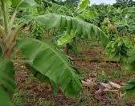

Productos Agrícolas
Nuestras familias campesinas cultivan con métodos tradicionales y sostenibles, respetando la tierra y el medio ambiente.
Maíz Criollo
Variedad tradicional, base de nuestra alimentación local.
Ver más informaciónCultivado sin agroquímicos. Ideal para arepas, mazamorra, envueltos y otros platos típicos de la región.
Aguacate
Aguacate fresco cultivado en nuestras fincas.
Producto natural muy nutritivo cultivado por agricultores de la vereda.
Mango
Mango dulce cosechado directamente del árbol.
Fruta tropical utilizada para jugos, postres y consumo fresco.
Plátano
Plátano cultivado por familias campesinas.
Ideal para preparar patacones, tajadas y platos tradicionales.
Galería de la Comunidad
Imágenes de nuestros cultivos, paisajes y momentos de la vereda.

Logros Escolares
Nuestros estudiantes han destacado en proyectos que combinan tecnología, educación y cuidado del campo.
- ✓ Participación destacada en la Feria Científica Rural
- ✓ Creación del primer sitio web comunitario de la vereda
- ✓ Proyectos educativos sobre agricultura sostenible y cuidado del agua
Contacto
¿Quieres conocer más sobre nuestros productos o apoyar la comunidad?
¡Escríbenos!